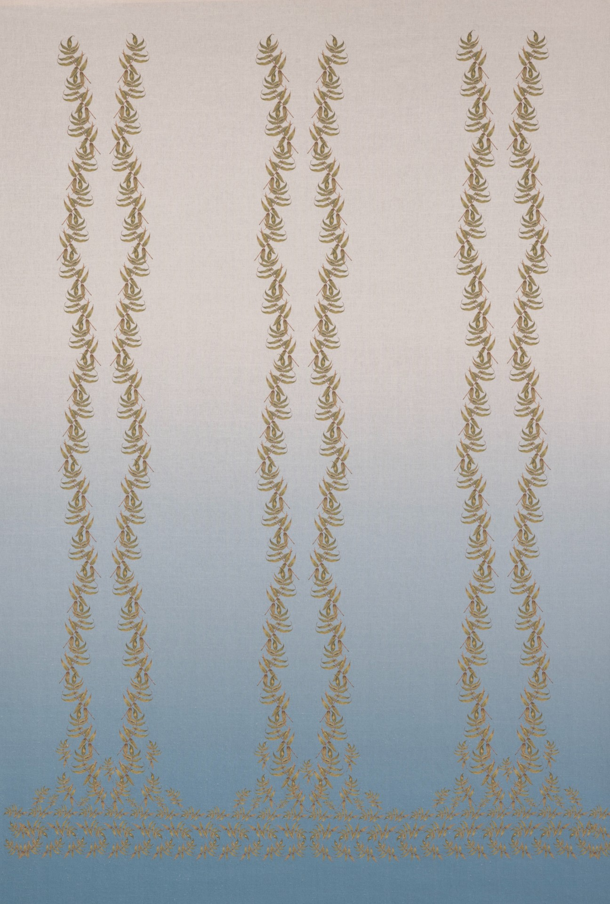
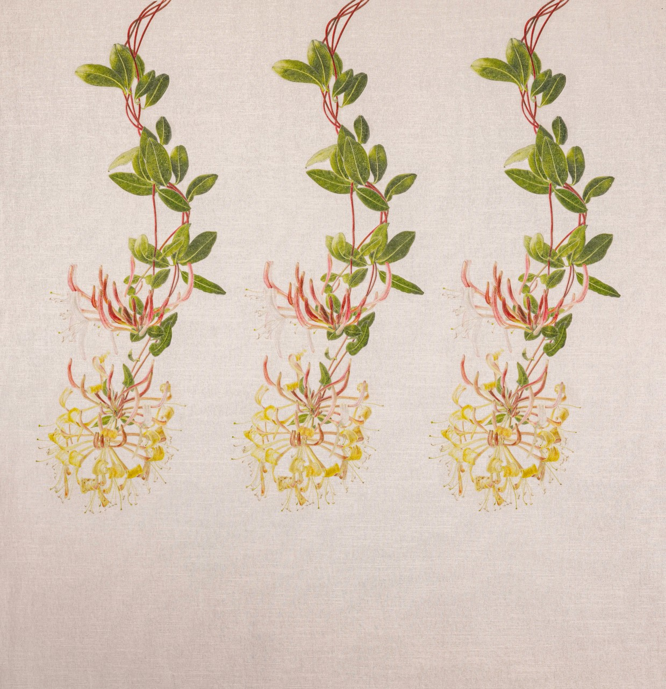

FABRICS
Introduction to Fabrics
All my printed curtain fabrics are inspired by my botanical pictures. Some are simple repeating patterns, others are printed to a particular length. In these cases a design is created to fit the drop and therefore the pattern repeat is the length of the curtain or blind. These bespoke printed fabrics are unique.
Repeating Designs

SAGE

THALICTRUM
Bespoke Designs
Once the drop length and window width is established, the design has to be re-created to fit that drop and then the number of widths calculated. This is a process that requires consultation.
The following photographs show examples of a single drop with the design especially created for a specific window.
ALLIUM

SORBARIA
COTINUS
